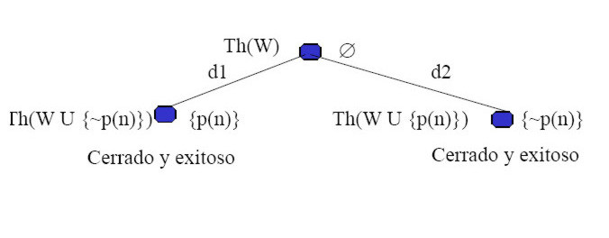
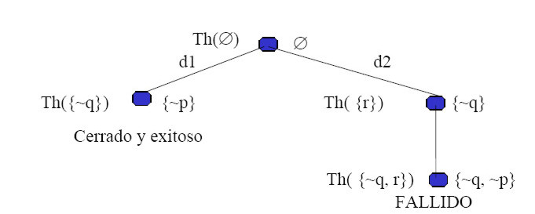

Inteligencia Artificial
Claudio Vaucheret
Lógica Default
Created: 2023-09-26 mar 19:55
Introducción
Lógica Default de Reiter
Ray Reiter(1939 - 2002)
Lógica Default
Insistimos en construir
un sitio para Tweety
que es un AVE :)
Pero necesitamos saber si Tweety vuela
Lógica Default
Podríamos decir que:
Si Tweety es un ave y es consistente asumir que vuela entonces podemos concluir que Tweety vuela.
¿Cómo escribimos esta frase?
Lógica Default
Si Tweety es un ave y es consistente asumir que vuela entonces podemos concluir que Tweety vuela.
\[\frac{ave(tweety): vuela(tweety)}{vuela(tweety)}\]
Repaso
¿Qué es un RRS?
¿Qué elementos se distinguen en un RRS?
- Sintáxis: Lenguaje
- Semántica
- Teoría de Prueba
Sintáxis de la Lógica Default
Lenguaje de la Lógica Default
Teoría Default (Ray Reiter)
Una Teoría Default \(T\) es un par \((W,D)\) consistente de un conjunto \(W\) de fórmulas de la lógica de predicado, llamadas hechos o axiomas de \(T\) y un conjunto contable de \(D\) de defaults.
Teoría Default
Un default \(\delta\) tiene la forma \[\frac{\alpha:\psi_1,\psi_2\ldots \psi_n}{\chi}\] donde \(\alpha, \psi_1,\psi_2,\ldots,\psi_n,\chi\) son fórmulas cerradas de la lógica de predicado y \(n>0\).
Lenguaje de la Lógica Default
\[\frac{\alpha:\psi_1,\psi_2\ldots \psi_n}{\chi}\]
\(\alpha\) se llama prerequisito
\(\psi_1,\psi_2\ldots \psi_n\) se llaman las justificaciones
\(\chi\) es la conclusión.
Ejemplo con Tweety
Sea la teoría default \(T=(W,D)\) donde
\[W=\{ave(tweety); ñandú(tweety) \rightarrow \neg vuela(tweety)\}\] \[D=\left\{\frac{ave(tweety): vuela(tweety)}{vuela(tweety)}\right\}\]
¿Es posible aplicar la regla default?
Recordemos que:
Si Tweety es un ave y es consistente asumir que vuela entonces podemos concluir que Tweety vuela.
Ejemplo 2 con Tweety
Sea la teoría default \(T=(W,D)\) donde
\[W=\{ave(tweety)\}\] \[D=\left\{\frac{ave(tweety): vuela(tweety)}{vuela(tweety)}; \frac{ñandú(tweety): \neg vuela(tweety)}{\neg vuela(tweety)}\right\}\]
¿Es posible aplicar las reglas defaults? ¿Cuál?
Recordemos que:
Si Tweety es un ave y es consistente asumir que vuela entonces podemos concluir que Tweety vuela.
Si Tweety es un ñandú y es consistente asumir que no vuela entonces podemos concluir que Tweety no vuela.
Ejemplo 2 con Tweety
Agreguemos nueva información:
\[W=\{ave(tweety);ñandú(tweety)\}\] \[D=\left\{\frac{ave(tweety): vuela(tweety)}{vuela(tweety)}; \frac{ñandú(tweety): \neg vuela(tweety)}{\neg vuela(tweety)}\right\}\]
¿Es posible aplicar las reglas defaults? ¿Cuál?
Recordemos que:
Si Tweety es un ave y es consistente asumir que vuela entonces podemos concluir que Tweety vuela.
Si Tweety es un ñandú y es consistente asumir que no vuela entonces podemos concluir que Tweety no vuela.
Semántica
Análisis Informal
\[\frac{\alpha:\psi_1,\psi_2\ldots \psi_n}{\chi}\] Significado informal
Si \(\alpha\) es conocido y es consistente asumir \(\psi_1,\psi_2\ldots \psi_n\), luego concluya \(\chi\).
- En este punto nos preguntaremos:
- Es conocido dónde?
- ¿Con qué elementos decidimos si es consistente asumir las justificaciones?
Análisis Informal
\[\frac{\alpha:\psi_1,\psi_2\ldots \psi_n}{\chi}\]
Significado informal
Si \(\alpha\) es conocido actualmente y es consistente asumir \(\psi_1,\psi_2\ldots \psi_n\) con el conocimiento actual, luego concluya \(\chi\). La base de conocimiento actual \(E\) se obtiene a partir de los hechos y de las consecuencias de las reglas defaults aplicadas previamente.
Significado formal
\(\frac{\alpha:\psi_1,\psi_2\ldots \psi_n}{\chi}\) es aplicable sobre un conjunto cerrado de fórmulas \(E\) si y solamente si \(\alpha \in E\) y \(\neg \psi_1\not\in E,\neg \psi_2\not\in E \ldots \neg \psi_n\not\in E\).
Semántica
¿En qué cree un Agente cuya representación de conocimiento es \((W,D)\) y razonamiento es el de la Lógica Default?
Pensemos……
- Deseamos creer en los hechos que estén en \(W\), ya que \(W\) contiene toda la información certera. ¿Sólo en \(W\)?
- Deseamos creer en todo aquello que podamos deducir del conocimiento actual (cerrada deductivamente).
- Deseamos creer en todas las consecuencias de todas las reglas que podamos aplicar.
Semántica
¿En qué cree un Agente cuya representación de conocimiento y razonamiento es el de la Lógica Default?
Extensión
Sea \(F\) un conjunto de fórmulas cerradas y \((W,D)\) una teoría default, entonces \(\Gamma(F)\) es el conjunto más pequeño tal que:
- \(W\subseteq \Gamma(F)\)
- \(Th(\Gamma(F))=\Gamma(F)\); $Γ $ es cerrado bajo consecuencia lógica
- Si \(\frac{\alpha:\psi_1,\psi_2\ldots \psi_n}{\chi}\in D\) y \(\alpha \in \Gamma(F)\) y \(\neg \psi_1,\neg\psi_2,\ldots, \neg \psi_n\not\in F\) entonces \(\chi\in \Gamma(F)\).
Un conjunto \(E\) es una extensión de una teoría default \((W,D)\) si y solamente si \(\Gamma(E)=E\). Es decir \(E\) es el punto fijo del operador \(\Gamma\).
Semántica Operacional
\(\Pi\)
Sea \(\Pi =(d0,d1...)\) una secuencia finita o infinita de defaults de D sin ocurrencias múltiples.
- Podemos pensar en \(\Pi\) como en un posible orden de aplicación de los defaults de D.
- No deseamos aplicar un default más de una vez.
- \(\Pi[k]\) es el segmento inicial de \(\Pi\) de longitud \(k\).
IN y OUT
Base de Conocimiento Actual
\[In(\Pi)\ = \ Th(M)\]siendo \(M= W \cup \{cons(d)| d \mbox{ ocurre en } \Pi\}\).
Fórmulas que NO deberían ser true
\[Out(\Pi) = \{\neg b| b\in just(d) \mbox{ para algún } d \mbox{ en } \Pi\}\]
IN y OUT
Sea la teoría default \(T=(W,D)\) donde \[W=\{ave(tweety),ñandú(tweety)\}\] \[D=\left\{d1=\frac{ave(tweety): vuela(tweety)}{vuela(tweety)}; d2=\frac{ñandú(tweety): \neg vuela(tweety)}{\neg vuela(tweety)}\right\}\]
- ¿In(d1)? ¿Out(d1)?
- ¿In(d2)? ¿Out(d2)?
- ¿In(d1d2)? ¿Out(d1d2)?
IN y OUT
Sea la teoría default \(T=(W,D)\) donde \[W=\{ave(tweety),ñandú(tweety)\}\] \[D=\left\{d1=\frac{ave(tweety): vuela(tweety)}{vuela(tweety)}; d2=\frac{ñandú(tweety): \neg vuela(tweety)}{\neg vuela(tweety)}\right\}\]
- In(d1)= Th(ave(tweety), ñandú(tweety), vuela(tweety)) Out(d1)={¬ vuela(tweety)}
- In(d2)= Th(ave(tweety), ñandú(tweety), \(\neg\) vuela(tweety)) Out(d2)=\(\{\) vuela(tweety)\(\}\)
- In(d1d2)= Th(ave(tweety), ñandú(tweety), vuela(tweety), ¬ vuela(tweety)) Out(d1d2)= {¬ vuela(tweety), vuela(tweety)}
IN y OUT
In
Base de Conocimiento Actual
Out
Fórmulas que NO deberían ser true
- In(d1)= Th(ave(tweety), ñandú(tweety), vuela(tweety)) Out(d1)={¬ vuela(tweety)}
- In(d2)= Th(ave(tweety), ñandú(tweety), \(\neg\) vuela(tweety)) Out(d2)=\(\{\) vuela(tweety)\(\}\)
- In(d1d2)= Th(ave(tweety), ñandú(tweety), vuela(tweety), ¬ vuela(tweety)) Out(d1d2)= {¬ vuela(tweety), vuela(tweety)}
Proceso
Definición
\(\Pi\) es un proceso de \(T\) si y solamente si \(d_k\) es aplicable a \(In(\Pi[k])\), para cada \(k\), tal que \(d_k\) ocurre en \(\Pi\).
Definición
Una regla default \[d=\frac{\alpha:\beta}{\chi}\] es aplicable a \(In(\Pi)\) si y solamente si \(\alpha \in In(\Pi)\) y \(\neg \beta\not\in In(\Pi)\).
Proceso Exitoso y Cerrado
Exitoso
\(\Pi\) es un proceso exitoso de \(T\) si y solamente si \(In(\Pi)\cap Out(\Pi) = \varnothing\). De otro modo, es fallido.
Cerrado
\(\Pi\) es un proceso cerrado de \(T\) si y solamente si cada \(d\in D\) que es aplicable a \(In(\Pi)\) ya ocurre en \(\Pi\).
Proceso Exitoso y Cerrado
Exitoso: \(In(\Pi)\cap Out(\Pi) = \varnothing\).
Cerrado: se han aplicado todos los defaults que podían ser aplicados.
- In(d1)= Th(ave(tweety), ñandú(tweety), vuela(tweety)) Out(d1)={¬ vuela(tweety)}
- In(d2)= Th(ave(tweety), ñandú(tweety), \(\neg\) vuela(tweety)) Out(d2)=\(\{\) vuela(tweety)\(\}\)
- In(d1d2)= Th(ave(tweety), ñandú(tweety), vuela(tweety), ¬ vuela(tweety)) Out(d1d2)= {¬ vuela(tweety), vuela(tweety)}
Extensión
Un conjunto de fórmulas E es una extensión de una teoría default \(T\) si y solamente si existe algún proceso \(\Pi\) de \(T\) cerrado y exitoso tal que \[E=In(\Pi).\]
Árbol de Proceso
Sea T=(W;D) una teoría:
- Nodos del árbol: están etiquetados con dos conjuntos de fórmulas:
- IN: izquierda del nodo.
- OUT: derecha del nodo.
- Arcos del árbol: corresponden a aplicaciones de defaults y están etiquetados con el default aplicado.
Árbol de Proceso
Raíz
La etiquetamos con
- IN= \(Th(W)\).
- OUT= \(\varnothing\).
Un nodo es expandido si \(IN\cap OUT=\varnothing\)
De otro modo es marcado como fallido
Extensión
Si \(N\) no puede ser expandido porque no existen más defaults aplicables y es exitoso, entonces encontramos una extensión.
IN y OUT
Sea la teoría default \(T=(W,D)\) donde \[W=\{cu\acute{a}quero(nixon), republicano(nixon)\}\] \[D=\left\{\begin{array}{c} d1=\frac{republicano(nixon): \sim pacifista(nixon)}{\sim pacifista(nixon)};\\ d2=\frac{cu\acute{a}quero(nixon): pacifista(nixon)}{pacifista(nixon)}\end{array}\right\}\]
Construir el árbol de proceso.
Árbol de Proceso
Sea la teoría default \(T=(W,D)\) donde \[W=\{cu\acute{a}quero(nixon), republicano(nixon)\}\] \[D=\left\{\begin{array}{c} d1=\frac{republicano(nixon): \sim pacifista(nixon)}{\sim pacifista(nixon)};\\ d2=\frac{cu\acute{a}quero(nixon): pacifista(nixon)}{pacifista(nixon)}\end{array}\right\}\]

IN y OUT
Sea la teoría default \(T=(W,D)\) donde \[W=\{\ \}\] \[D=\left\{\begin{array}{c} d1=\frac{true: p}{\sim q};\\ d2=\frac{true:q}{r}\end{array}\right\}\]
Construir el árbol de proceso.
Árbol de Proceso
Sea la teoría default \(T=(W,D)\) donde \[W=\{\ \}\] \[D=\left\{\begin{array}{c} d1=\frac{true: p}{\sim q};\\ d2=\frac{true:q}{r}\end{array}\right\}\]

Razonamiento por casos
Sea la teoría default \(T=(W,D)\) donde
\[W=\{italiano \vee franc\acute{e}s\}\]
\[D=\left\{d1=\frac{italiano: gusta\_vino}{gusta\_vino}; \ \ \ d2=\frac{franc\acute{e}s:gusta\_vino}{gusta\_vino}\right\}\]
- Intuitivamente, ¿debería ser gusta_vino una conclusión válida?
- ¿Es posible concluir gusta_vino?
Hechos Vs. Defaults
Ejemplo 1:
\(W=\{a,b\}\) \(In(\varnothing)= Th(\{a,b\})\) \(D=\left\{d1=\frac{b: \sim a}{c}\right\}\) \(Out(\varnothing)=\varnothing\) Ejemplo 2:
\(W=\{b\}\) \(D=\left\{d1=\frac{b: \sim a}{c};d2=\frac{true: true}{a}\right\}\)
\(In([d2])= Th(\{a,b\})\) \(In([d1d2])= Th(a,b,c\})\) \(Out([d2])=\varnothing\) \(Out([d1d2])=\{a, false\}\) Lógica Default y Programación en Lógica
Negación por Falla Vs. Reglas Defaults
Negación por Falla
Suposición de Mundo Cerrado (CWA).
Reglas Default
Se asume consistente suponer la justificación de la regla.
Relación entre PL y LD
La regla \({\color{green}{R= A\leftarrow B_1\wedge \ldots\wedge B_n\wedge not\ C_1\wedge\ldots\wedge not\ C_k}}\)
Se corresponde con la regla default:
\[{\color{blue}{df(R)=\frac{B_1\wedge \ldots\wedge B_n: \sim C_1, \ldots, \sim C_k}{A}}}\]
La regla \({\color{green}{R= A\leftarrow B_1\wedge \ldots\wedge B_n}}\)
Se corresponde con la regla default:
\[{\color{blue}{df(R)=\frac{B_1\wedge \ldots\wedge B_n: true}{A}}}\]
La regla \({\color{green}{R= A\leftarrow true}}\)
Se corresponde con la regla default:
\[{\color{blue}{df(R)=\frac{true: true}{A}}}\]
Creencias del Agente
¿En qué cree un agente?
Bibliografía: Cuadro del libro de Poole, versión 1998, Pág. 331.
- Propuesta 1: Creencias Arriesgadas o Crédulas. Existe algún argumento a favor; es decir está en alguna extensión.
- Propuesta 2: Creencias Cautas o Excépticas. No tienen argumentos en contra; es decir está en todas las extensiones.
- Propuesta 3: El camino no está minado. \(g\) es consecuencia si existe un argumento a favor \(D=\{d_1,\ldots ,d_n\}\) y ningún \(\neg d_i\) puede ser explicado.
Bibliografía
Referencia Bibliográfica
 G. Antoniou
Nonmonotonic Reasoning.
Parte II: Default Logic. Capítulos 3,4(hasta sección 4.5 - sin incluir)
G. Antoniou
Nonmonotonic Reasoning.
Parte II: Default Logic. Capítulos 3,4(hasta sección 4.5 - sin incluir)
- D. Poole, A. Mackworth y R. Goebel
Computational Intelligence: A Logical Approach.
Capítulo 9
1998